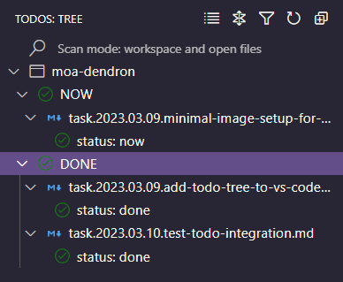
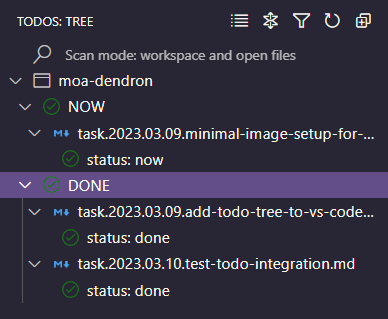

VS Code Todo Tree
| page-type |
|---|
VS Code extension to find keywords like TODO and FIXME in your project, then display them in a sidebar.

Related
| page-type |
|---|
VS Code extension to find keywords like TODO and FIXME in your project, then display them in a sidebar.

Related